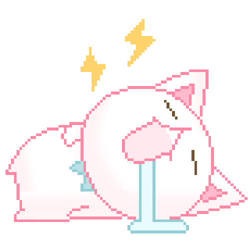
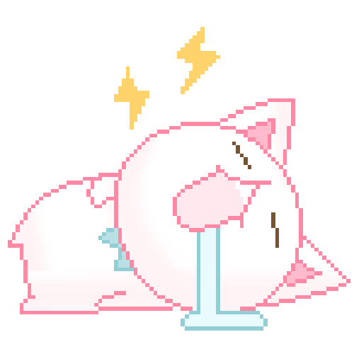

What was the first thing you paid attention to when interacting with the experience?
The first thing that caught my attention is the very minimalistic design of the website which emphasises clarity and simplicity, by reducing visual distractions. This is also the reason that the white space is very large, contrasting against the ash black font and illustrations, making content easier to digest. There is also very little text and everything is very simple, making it clear to read. The layout is also very organised, where most things are compartmentalised into boxes or rectangles, according to the pictures that are being presented. This makes it easy to categorise each of the projects and guide the viewers’ attention towards them, making for enhanced usability, since it encourages the users’ engagement.
My discrete actions
- scrolled through the website
- scrolled back up
- clicked on each of the ‘featured projects’
- looked at what they did for each project
- clicked on each of the ‘other projects’
- looked at what they did for each project
- went to the about page
- went to see the resume
- clicked back
- went back home
- clicked on explore projects
- went back home
What did you spend the most time engaging with?
I spent the most time engaging with each of the products that were featured within the portfolio. This was because there was plenty of information to read about each project, which was explained very clearly, paired with the visuals that expressed each outcome. Since the overall layout of having text and visuals kept repeating, it was easy to understand each project, even with minimal text. This improved the overall accessibility of the website since it relied on showing not telling.
 

The most common action in your experience?
Scrolling was the most common action since all of the pages presented had to be scrolled, including the home page, the projects and the resume. The only one without scrolling was the about me page. Clicking was the second most common interaction and the only interactive element within the pages. Since there were almost no interactions, it reduced the cognitive load for the user and helped them process information more easily. Clicking also provided clear cues into where the user was going, however, due to the identical layout, there was little feedback on which projects users had already viewed, making it difficult to track progress, and I kept revisiting the same projects unintentionally.
How does the interactive experience communicate this primary goal?
The primary goal of the website is to showcase Minjea’s work in a clean and distraction free way, showcasing their aesthetic style and overall attention to detail. By prioritising showcasing their projects with minimal text and lots of whitespace, it helps to keep a consistent layout and also keep the focus on the content itself. The minimal interactions also add to this, making the experience very smooth. This demonstrates minjea’s ux/ui knowledge itself, by making the experience very accessible and enjoyable.
What is your impression of how the experience should be interacted with over time?
The experience feels to be designed for short and focused visits rather than for extended sessions. However, the minimal interactions also make it suitable for multiple visits, particularly if a user wants to revisit specific projects or share them with others.

How does the interactive experience communicate how it should be interacted with over time?
Each project is presented in a concise and easily digestible format, which makes it possible to explore the portfolio in one sitting, likely under 10-15 minutes. Also, the absence of dynamic or regularly updated elements signals that the site is static, which suggests that it is not intended for prolonged engagement over time, but rather for occasional visits for discovering or evaluating Minjea’s work. The overall experience is very low effort, so users can easily browse it without needing extended sessions.
What other media forms (digital or otherwise) does the experience reference?
The experience references the visual language of printed design portfolios and editorial layouts where there is generous whitespace, clean typography and compartmentalised project previews. The minimalistic colour palette and text mimic the clarity of these catalogues where visuals take precedence over other written content. Digitally, the scrolling navigation and grid like presentations, reference creative platforms like behance or adobe portfolio. Overall, Minjea blends traditional print aesthetics with modern portfolio conventions.
What does this reference/s communicate to you about how you should act when engaging with your research experience?
These references communicate that the site should be approached with the same mindset as browsing a high end portfolio or exhibition, where people look slowly and pay attention to visual details. The emphasis of the clean aesthetic conveys that the users’ role is to observe and appreciate the work rather than manipulate or explore its interactions. Therefore, it invites a short, intentional viewing experience.

What is the most frustrating part of the interaction to you and what makes that part frustrating?
The most frustrating aspect of the interaction is scrolling, since it often feels endless and it is unclear which projects have been viewed. There should be more feedback, such as having different coloured text for things that have been viewed. Additionally, after the ‘other projects’ section there are more projects at the bottom to view which feels disorganised and interrupts the flow of the experience. It may be clearer if the projects could just be mentioned all together in a single heading, with each project's description and visuals grouped together, rather than splitting them across multiple sections. Another point of frustration is the placement of the contact information. It is located at the bottom left corner of the site which I didn't notice until now. Including the contact details in the ‘about me’ section, along with the direct links to both their email and linkedin, would make everything more accessible and user friendly.
What is the most satisfying part of the interaction to you and what makes that part satisfying?
Overall, the most satisfying part of the interaction is the minimalist and clean presentation of the whole website. The whitespace, consistent layout, high contrast typography and visuals make the content very easy to read and visually appealing. Though scrolling, the experience feels mostly smooth and uninterrupted which easily allows the work to be the main source of the users’ attention and the simplicity of the interactions also makes browsing very enjoyable and effortless.